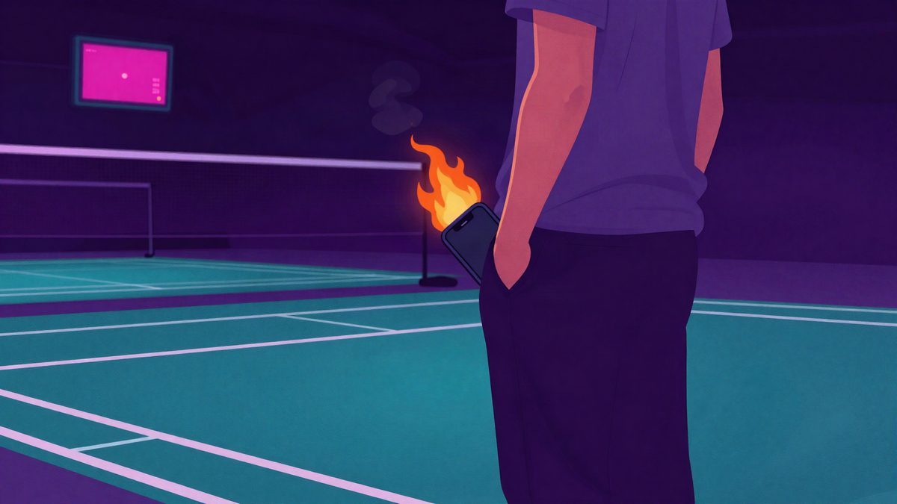

Nvidia driver 621.01 uvodi Microsoftov Advanced Shader Delivery za brže pokretanje igara

Nvidia je objavila driver 621.01 s podrškom za Microsoftov Advanced Shader Delivery. Tvrtka navodi da sustav može ubrzati pokretanje igara i smanjiti zastajkivanja tijekom igranja. Podrška je trenutačno dostupna za Gears of War: E-Day i Call of Duty: Modern Warfare 4.
Nvidia je objavila GPU driver 621.01 s Microsoftovim Advanced Shader Deliveryjem. Tehnologija ubrzava pokretanje PC igara i smanjuje "just-in-time" shader compilation tijekom igranja. Time bi se trebali smanjiti zastajkivanja i skokovi opterećenja procesora.
Microsoftov sustav shader compilation za različite kombinacije hardvera prebacuje u cloud. Prema Nvidiinu Andrewu Burnesu, developeri kroz DirectX 12, Windows 11 i Microsoft Agility SDK prikupljaju shadere u State Object Databaseu. Microsoftova cloud mreža zatim ih prekompajlira za stotine tisuća kombinacija hardvera i drivera.
Advanced Shader Delivery trenutačno podržavaju Gears of War: E-Day i Call of Duty: Modern Warfare 4. Uvjet je da se igre preuzmu preko Xbox PC appa. Burnes kaže da je sustav store-agnostic. Prednosti vrijede i za igre kupljene na Steamu, ako je Xbox PC app instaliran na računalu.
Prema Nvidijinu opisu, tehnologija može preskočiti ekran za shader compilation u Call of Dutyju i poboljšati ukupne performanse podržanih igara. Tvrtka navodi da near-100 percent cache hit rate uklanja mid-game shader compilation. Smanjuju se i CPU spikeovi i frame stutteri u podržanim naslovima.
Driver 621.01 može se preuzeti odmah. Advanced Shader Delivery nije ograničen na Nvidijine grafičke kartice. Podržan je i na AMD GPU-ima uz Adrenalin 26.6.1 ili noviji te na Qualcommovoj Snapdragon X2 seriji uz driver 2026.08.3 ili noviji.
Izvor: The Verge
Povezani članci
 Nvidia RTX Remix 1.6 je dobio DLSS 5, a Minecraft Java Edition prvi put dobiva path tracing24. listopada 2026.
Nvidia RTX Remix 1.6 je dobio DLSS 5, a Minecraft Java Edition prvi put dobiva path tracing24. listopada 2026. Apple je počeo skenirati iPhone u zatvorenoj kutiji prije povrata25. listopada 2026.
Apple je počeo skenirati iPhone u zatvorenoj kutiji prije povrata25. listopada 2026.
Tri znaka da baterija mobitela može otkazati: na što je upozorio CCTV nakon slučaja spontanog požara25. listopada 2026.